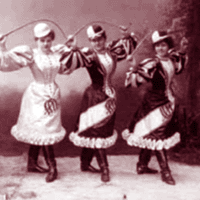

| farocki |
| home page |
|  | Fumio (Asakura) Funakoshi, Katsura Japanischer Bildhauer, geb. ., Bildende Kunst, lebt in Berlin; Fallico, Arturo Fallico - 22700 Mt. Eden Rd-' Saratoga' CA 95070 , USA Faltin, Mario (1 952) , lebt in Berlin; Fan Mail - P. , Bildende Kunst, lebt in Berlin; FECHNER-SCHERK Gabriele Malerei, Teiln. |
|
Das ist die Frage, die ich mit meinen Arbeiten stellen will. . Januar 2002 begleitend zur Wehrmachtsausstellung in Berlin-Mitte (Auguststr. Sie waren anders als alles, was wir an Propaganda kannten. Dennoch sind auch diese operativen Bilder Propaganda. |
| 1943 teilten die Weltmaechte und Stalin Europa unter sich auf, ohne einen einzigen Bewohner des Kontinents zu fragen. Damit haben wir den Ausdruck dessen, der am naechsten Tag den Freitod waehlt". (Harun Farocki) The Berlin based filmmaker, essayist and film critic Harun Farocki has been looking at the TV coverage of the days before and after the fall of the Berlin Wall. Using this footage he made a documentarian film-essay. "This are images taken from the news coverage and because of that the unexpectable seems to be normal. |